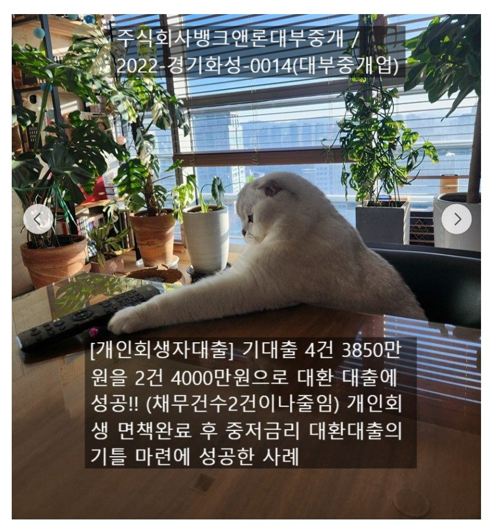
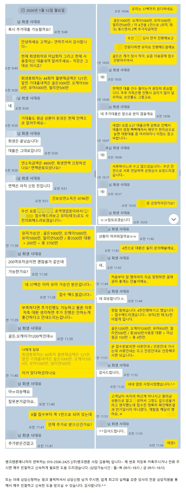
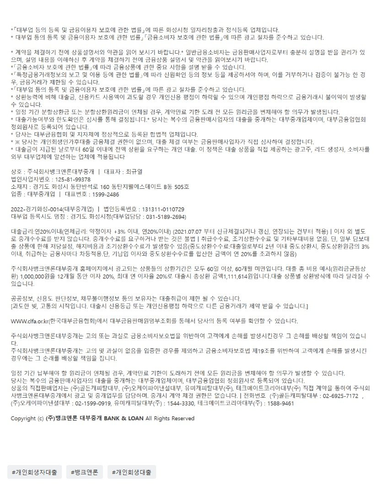

[개인회생자대출] 기대출 4건 3850만원을 2건 4000만원으로 대환대출에 성공!! (채무건수2건이나줄여서 개인회생면책완료후 중저금리대환대출의 기틀 마련함)

안녕하세요~ 주식회사 뱅크앤론 대부중개 입니다. 당사는 업력 16년이상된, 10년이상 대출/금융업 부분 고객만족 및 브랜드대상을 수상한 믿을 수 있는 기업입니다. (수상기관 : 조선일보, 해럴드경제, 스포츠조선, 스포츠동아, 한경닷컴, 스포츠서울, 일간스포츠.)
오늘 소개해드릴 사례는 회생 완납은 하셨고 아직 면책신청전이셨으며 연소득은 4800만원정도에 기대출이 4건 3850만원 사용중인 고객님의 성공사례 입니다. 고객님의 상황은 아래 카톡 대화 내용을 통해서도 아실 수 있습니다. 지금 시점에서의 고객님들은 제일 중요한것이 면책완료후 중저금리로 통합하는 부분입니다. 그때 대출 건수는 매우 중요합니다. 대출 건수가 많으면 부결이 되거나 통합이 되어도 높은 금리를 적용받게 됩니다. 면책후 대출관련된 내용은 아래 사례를 통해서 참고하실 수 있습니다. https://cafe.naver.com/cityman88/309305
원본 백업에 없거나 외부 접근이 제한된 이미지입니다.
[회생면책자대출필독] 면책직후 대부3건을 연금리13%로 채무통합에 성공한 사례!! (회생중이신분들도 꼭 보셔서 미리 준비하셔야 함!!!!)
안녕하세요~ 주식회사 뱅크앤론 대부중개 입니다. 당사는 업력 16년이상된, 10년이상 대출/금융업 부분 고객만족 및 브랜드대상을 수상한 믿을 수 있는 기업입니다. (수상기관 ...
작년에 6.27 대출규제 강화이후 대출 심사가 매우 까다로워져서 소득대비 매우 기대출 과다가 아니더라도.. 적당히과다(?)여도 승인률이 매우 낮습니다ㅠ.ㅠ 해당 고객님도 요즘 승인률이 매우 높다하는 A대부로도 접수해드렸지만 부결의 쓴맛을 맛보셔야했습니다. 하지만 쉽게 포기할 뱅크앤론이 아니죠. 이대로면 면책후에도 오랫동안 고금리 대부 대출을 사용하게 될수있는부분이라.. 실제로 요즘 면책후에도 1년가까이 중저금리 대환에 성공못하고 고생하시다가 다시 신용회복을 신청 하는 경우도 적지 않습니다. 때문에 최선을 다해서 알아봐드렸고 결국 유미 2000만 테크 2000만 승인되어서 대출 두건을 줄이고 약간의 생활자금마련에도 성공시켜드렸습니다. 이대로면 3개월정도 후에 중저금리로 통합 대환진행하기 매우 쉬워졌기에 아주 대 성공이였습니다.^^
이처럼 개인회생자대출은 믿을 수 있고 항상 최선을 다하는, 그리고 경험 많은 전문적인 중개사를 통하는 것이 매우 중요합니다. 문의주시는 모든 고객분들께 친절하고 최선을 다해서 도움드릴 것을 약속드립니다.

상담신청 -> https://cafe.naver.com/cityman88/29497
https://cafe.naver.com/cityman88/309876
원본 백업에 없거나 외부 접근이 제한된 이미지입니다.
[필독사례모음] 개인회생자대출 필독 매니저 사례 모음 (개인회생자대출 알아보시는분들 필독필독!!)
[개인회생자대출] 회생면책자 1700만 13.8% 승인사례 (기대출과다, 대부사용중인 4대가입 직장인 회생면책자) https://cafe.naver.com/cityman88/...

https://cafe.naver.com/cityman88/309916